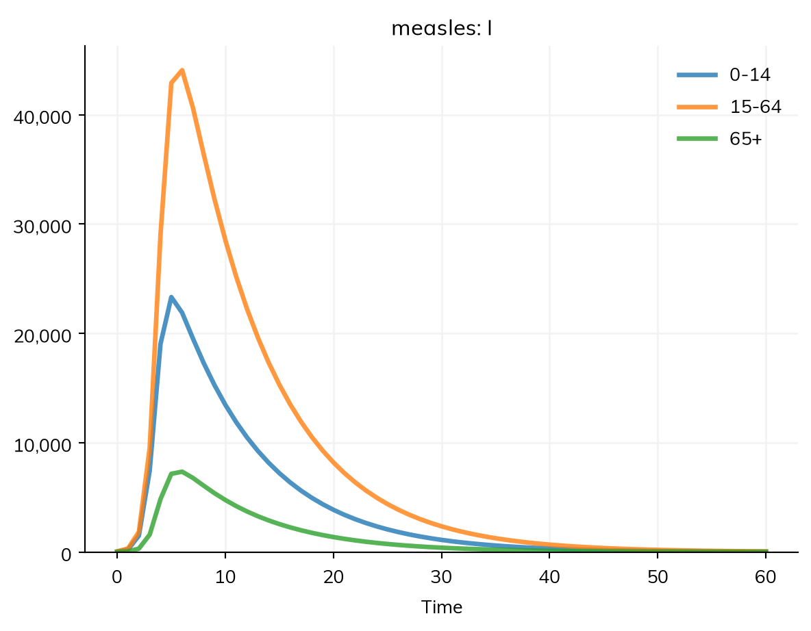
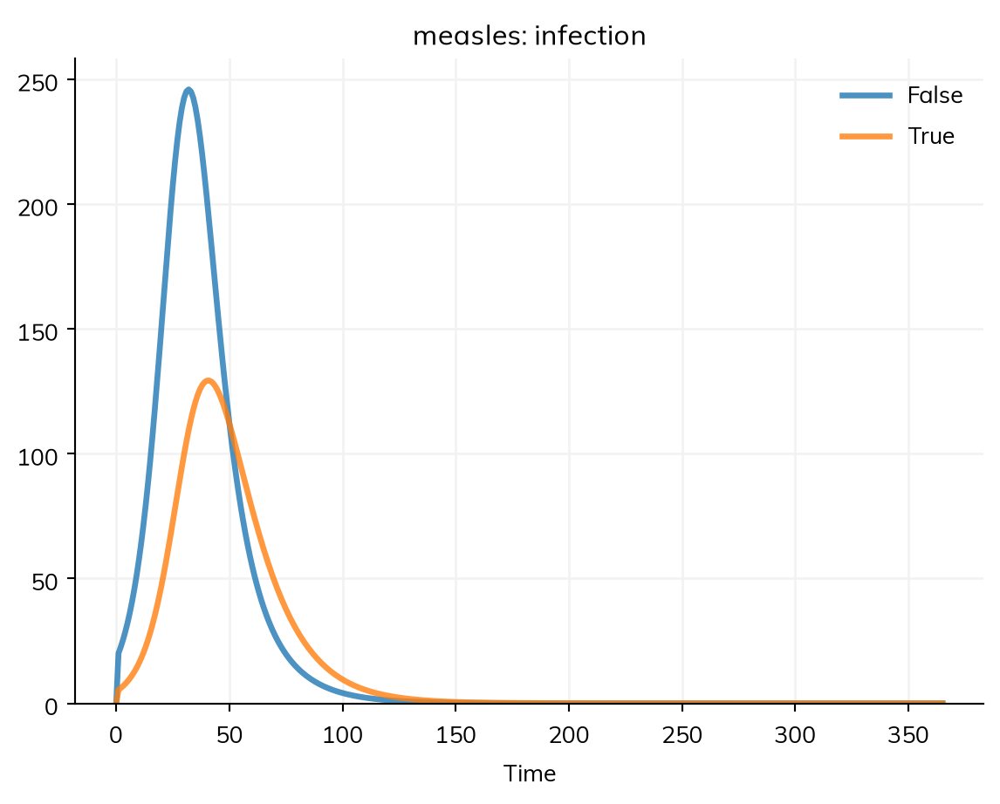
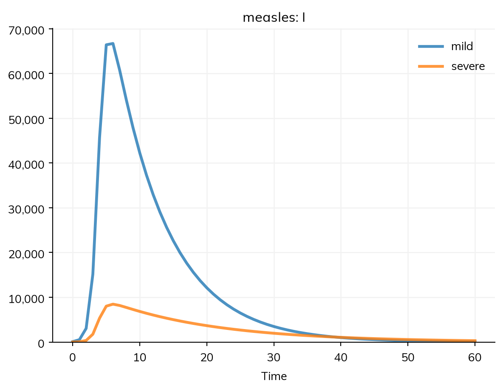

People differ in ways that change how a disease spreads: children mix more than adults, some people are vaccinated, some take more risks. Stratifying a model divides its population into groups by such a property (age, sex, place, risk, vaccination), so that each group can have its own rates, its own contacts, and its own results. In Starsim this is one operation, stratify(), applied to a finished model: the model’s states and transitions don’t change, and the property becomes a dimension of each.
Measles spreads mostly among children, because children have the most contacts, and mostly with each other. Here the measles model is stratified into three age groups, with the share of the population in each, and given a contact matrix: row i, column j is the number of contacts per day that a person in group i has with people in group j.
import starsim as ssS, I, R = ss.states('S I R')infection = S >> I @0.14*I # With contacts, beta is per contact: 0.14 per contact per dayrecovery = I >> R @ ss.days(8)measles = ss.Disease(infection, recovery, init_prev=0.001)measles.stratify(age={0: 0.3, 15: 0.6, 65: 0.1}) # Ages 0-14, 15-64, and 65+, with the share in eachcontacts = ss.contacts(ages=[0, 15, 65], matrix=[[10, 6, 1], [3, 8, 1], [3, 6, 3]])sim = ss.Sim(measles, networks=contacts, total_pop=100_000, stop=ss.days(60))sim.run()sim.results.measles.I.by('age').plot()
Sim: measles, 100,000 people, as an ODE, days 0 to 60
measles: R0 = 15.8, with 100 infectious at the start
Done in 0.0061 s; measles: 99,900 infections; at most 73,363 infectious, on day 5

Children, who have the most contacts, are infected first: the number infectious peaks among them on day 5, and among adults and people 65 and over a day later, when about three in four of each group are infectious at once. (In numbers, most of those infectious are adults, who are 60% of the population.) The model is still the SIR model, but each equation now holds for each age group, and transmission sums over the groups that each group meets:
sim.diseases.measles.equations()
dS/dt = -beta * S * I / N
dI/dt = beta * S * I / N - I / dur_I
dR/dt = I / dur_I
In each equation, a state is its number in each group of age (0-14, 15-64, 65+), and in a transmission, I / N in group i is
the sum over groups j of C[i, j] * I[j] / N[j], with C the contacts per day of "contacts" (row i, people in group i; column j, their contacts in group j):
0-14 10 6 1
15-64 3 8 1
65+ 3 6 3
With contacts, β is the rate of infection per contact with an infectious person, and R0 depends on the whole contact matrix: here 0.14 per contact gives an R0 of about 16, close to the 15 before. Population data covers contact matrices, including those for real countries (ss.contacts('Kenya')).
Levels and shares
The levels of a dimension are given as a list, or as a dict with the share of people in each:
The shares can also be given as split= (risk=['low', 'high'], split=[0.8, 0.2]). If they aren’t given, they come from the population where it has them (the ages of a named population such as ss.people('Kenya')), or else from the world’s population by age for age groups, everyone in the first level for true and false, and equal shares otherwise, each marked as a guess by describe(). A level is referred to by its label ('0-14') or its position (0).
How groups differ
A stratified model is the same model in each group until something says otherwise. There are three ways to say it.
Contacts. A contact matrix by a dimension says how much each group mixes with each other one, as above.
Adjustments multiply a transition’s rate in each group (a duration is divided), by the transition’s name. rel_sus and rel_trans multiply the susceptibility and infectiousness of the people in each group:
measles.stratify(age={0: 0.3, 15: 0.6, 65: 0.1}, adjust={'recovery': [1.0, 1.0, 0.8]}) # Older people recover more slowlymeasles.stratify(risk={'low': 0.8, 'high': 0.2}, adjust={'rel_sus': [1, 3]}) # High-risk people are 3 times as susceptible
Values by group. Any parameter can take a value for each level with ss.by(), wherever it is used: in a rate (S >> I @ ss.by(age=[2.5, 1.9, 1.0])*I), as a share (init_prev=ss.by(age=[0.002, 0.001, 0])), or as the coverage of an intervention. See Values by group below.
Several dimensions
A model can be stratified by several properties, one call each. Here most people are vaccinated, with a vaccine that is 97% protective, which is a second dimension with an adjustment to susceptibility:
def make_measles(vaccinated): S, I, R = ss.states('S I R') infection = S >> I @0.14*I recovery = I >> R @ ss.days(8) measles = ss.Disease(infection, recovery, init_prev=0.001, name='measles') measles.stratify(age={0: 0.3, 15: 0.6, 65: 0.1})if vaccinated: measles.stratify(vaccinated={False: 0.1, True: 0.9}, adjust={'rel_sus': [1, 0.03]})return measlesbase = ss.Sim(make_measles(False), networks=contacts, total_pop=100_000, stop=ss.days(365), verbose=0)base.run()sim = ss.Sim(make_measles(True), networks=contacts, total_pop=100_000, stop=ss.days(365), verbose=0)sim.run()res = sim.results.measlesprint('Infections with no vaccination:', round(base.results.measles.infection.sum()))print('Infections with 90% vaccinated:', round(res.infection.sum()))print('Among the vaccinated:', round(res.infection.select(vaccinated=True).sum()))print('Among unvaccinated children:', round(res.infection.select(age='0-14', vaccinated=False).sum()))res.infection.by('vaccinated').plot()
Infections with no vaccination: 99900
Infections with 90% vaccinated: 14909
Among the vaccinated: 6013
Among unvaccinated children: 2855

With 90% vaccinated, the outbreak is much smaller, and about two in five of those infected are vaccinated: when nearly everyone is vaccinated, the few vaccine failures among them can be a large share of cases, though each vaccinated person is far less likely to be infected.
sim.describe() lists each dimension with its levels, the share of people in each (split: False 0.1, True 0.9), and its adjustments (adjust: rel_sus × 1, 0.03), so the parts of the model that a stratification adds can be checked there.
A share given for each level of a dimension applies within each level of the others: here 90% of each age group is vaccinated. Shares that differ by age are an ss.by() over both dimensions; see T8 – Stratification and co-transmission.
Mixing is a separate decision. Stratifying doesn’t by itself say anything about who meets whom: without a contact matrix, people in every group mix at random with people in every other, in proportion to their numbers. A contact matrix by a dimension says how much each group mixes with each other one. With several dimensions, each with its own matrix, contacts are assumed to be separable (age and risk, say, affect contacts independently); when they aren’t, give a joint matrix. Likewise, shares given separately for two dimensions assume that they are independent, which may not hold (age and risk may be correlated in your setting): give shares that differ by group with ss.by() over both.
Stratifying part of a model
By default, a dimension applies to every state of people, in every group. Two options narrow it:
states= gives the states it applies to. Severity, for example, is a property of the infected only: measles.stratify(severity={'mild': 0.9, 'severe': 0.1}, states=[I], adjust={'recovery': [1, 0.5]}). People entering I take a level in proportion to the shares.
where= gives the groups it applies to, as a dict of dimension and level: measles.stratify(pregnant={False: 0.95, True: 0.05}, where=dict(sex='female')) gives only women a level of pregnancy. The others have no level, so res.I.select(pregnant=True) counts women only.
S, I, R = ss.states('S I R')infection = S >> I @1.9*Irecovery = I >> R @ ss.days(8)measles = ss.Disease(infection, recovery, init_prev=0.001)measles.stratify(severity={'mild': 0.9, 'severe': 0.1}, states=[I], adjust={'recovery': [1, 0.5]}) # Severe cases last twice as longsim = ss.Sim(measles, total_pop=100_000, stop=ss.days(60), verbose=0)sim.run()sim.results.measles.I.by('severity').plot()

Moving between groups
People can move between the levels of a dimension, without changing their disease state:
Aging. In a model with births or deaths, people move up the age groups as they get older, at the rate the age groups give. A closed population (with no births or deaths) doesn’t age, since its age groups would empty, and describe() says so; use_aging=True on the sim ages it anyway.
Transfers.ss.transfer() moves people between levels at a rate: ss.transfer(vaccinated=True, rate=ss.peryear(0.2)) vaccinates 20% of the unvaccinated a year, whatever their disease state, and ss.transfer(risk=('low', 'high'), rate=ss.peryear(0.1)) moves people from low to high risk. A transfer is given to stratify() by keyword, and has a result of its own, as a transition does:
Counters.increment= on a transition moves people up a dimension of whole numbers each time it happens to them, e.g. the number of infections, doses, or births. A rate reads each person’s count as a property of people, ss.ppl.infections (in a compartmental run, each level’s count), e.g. a susceptibility that falls with each past infection:
S, I = ss.states('S I')tppi = ss.par(0.5) # Protection per past infectioninfection = ss.Transition(S, I, rate=(1- tppi)**ss.ppl.infections*ss.perday(0.3)*I, increment='infections')sis = ss.Disease(infection, I >> S @ ss.days(7), init=dict(I=0.01), name='sis')sis.stratify(infections=[0, 1, 2, 3, 4]) # 0, 1, 2, 3, 4+
Interventions. A delivery can move people between levels too, e.g. to vaccinate them on a date (Products).
ss.by() gives a value for each level of one or more dimensions, by position or by label:
beta = ss.by(age=[2.5, 1.9, 1.0]) # By positionbeta = ss.by(age={'0-14': 2.5, '15-64': 1.9, '65+': 1.0}) # By labelbeta = ss.by(age=[2.5, 1.9, 1.0], risk=[1.0, 3.0]) # One value per age group and risk level: the productinit = ss.by(age=[0.002, 0.001, 0]) # A share of each age group
A table (a dataframe with a column for each dimension and a column value) gives each combination directly, and a table by single year of age works whatever the model’s age groups. A value for each group can itself change over time (ss.by(age=[ss.timeseries(...), 1.9, 1.0])). See Parameters.
Stratifying the sim or a disease
Age, sex, and place are properties of people, and every disease in a sim has to agree on them: a contact matrix by age has no meaning if two diseases use different age groups. So a property of people is usually stratified once, on the sim, and every disease gets it:
A dimension that belongs to one disease (vaccination against measles, or severity) is stratified on that disease, as are adjustments to it. ss.Disease(..., stratify=dict(age=[0, 15, 65])) is the same as calling stratify() on the disease. Stratifying by place, with movement between places, is covered in Geography.
Results by group
A stratified result is still one result: used as it is, it is the total over every group. select() picks groups, and by() gives one series per level of a dimension:
res = sim.results.measlesres.I # Everyone in Ires.I.select(age='0-14') # Children in I (or age=0, by position)res.I.select(age=0, vaccinated=True) # Vaccinated children in Ires.infection.by('age') # New infections, one series per age group
A ratio, such as prevalence (I/N), is never averaged over groups: its numerator and denominator are each summed over the groups selected, and then divided. See Results.
Compartments and agents
Run as compartments, each state has one compartment for each combination of levels, so the number of compartments is the product of the numbers of levels: 3 age groups, 2 vaccination levels, and 3 states are 18 compartments. Run as agents, each person has their own value of the property (an age, or a level), and the groups are used for the contacts, adjustments, and results. A stratified model gives the same results by group either way. Model declaration describes how a dimension is represented.
Pitfalls
stratify() changes the model it is called on, and returns it. To keep the original as well, use inplace=False, which returns a stratified copy. Running the same cell twice in a notebook is safe: stratifying again in the same way does nothing, with a note. Stratifying by a dimension the model already has, in another way, is an error; build the model again.
Contacts by other age groups. A contact matrix by age groups that differ from the model’s is converted to the model’s, with a note. Check it in describe().
R0 without the contacts.measles.R0() on the disease alone assumes homogeneous mixing; sim.diseases.measles.R0() uses the sim’s contacts and groups.
A closed population doesn’t age. Over a long run without births or deaths, the age groups stay as they started.